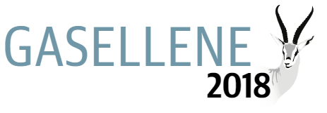

<section id="about" class="about-us left">
    <div class="container">
        <div class="about-us-content">
            <div class="row">
                <div class="col-sm-6">
                    <div class="single-about-us">
                        <div class="about-us-img">
                            
                        </div>
                        <h2 class="gazele-headine text-center">hva er gasellene</h2>
                        <p class="gazele-text">Gasellne er Norges raskest voskende og mest vellykkede bedrift.
                            En gaselle må ha minst doblet omsetningen på fire år, og tjene penger.
                            Hvert år kårer Dagens Naeringsliv norske fylker og landets mest vellykkede
                            gaseller.
                        </p>
                    </div>
                </div>

                <div class="col-sm-6">
                    <div class="single-about-us">
                        <div class="about-us-txt">
                            
                            <h2 class="gazele-kriterier">Kriterier for Gasellebedrifter</h3>
                            <ul class="kriterier-list">
                                <li>Levert godkjente regnskaper</li>
                                <li>Minst doblet omsetningen over fire år</li>
                                <li>Omsetning på over en million kroner første år </li>
                                <li>Positivt samlet driftsresultat</li>
                                <li>Unngått negative vekst</li>
                                <li>Vaert aksjeselskap</li>
                            </ul>

                        </div>
                    </div>
                </div>
            </div>
        </div>
    </div>
</section>